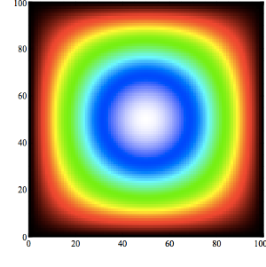

<!DOCTYPE html>
<html lang="en">
  <head>
    <title>this.data</title>
    <link rel="stylesheet" href="assets/css/style.css">
    <link rel="stylesheet" href="assets/css/font.css">
    <link rel="stylesheet" href="//maxcdn.bootstrapcdn.com/font-awesome/4.2.0/css/font-awesome.min.css">
    <link rel="stylesheet" href="//cdnjs.cloudflare.com/ajax/libs/highlight.js/8.4/styles/github.min.css">
  </head>
</html>
<body>
  <div id="side-bar">
    <div id="header">
      <div id="title">this.data</div>
      <div id="author">
        <div id="name">Flávio Sousa</div>
        <div id="social-media"><a href="//pt.linkedin.com/pub/flávio-sousa/3a/a06/770/" target="_blank"><i class="fa fa-linkedin"></i></a><a href="//twitter.com/fjmarujo" target="_blank"><i class="fa fa-twitter"></i></a><a href="//github.com/fjsousa" target="_blank"><i class="fa fa-github"></i></a></div>
      </div>
    </div>
    <div id="menu"><a href="webrtc-parallel-processing.html"><span id="nav-item-title">WebRTC Parallel Processing</span></a><span id="nav-item-date">12-01-2015</span><br></div>
  </div>
  <div id="container">
    <div id="content"><h1 id="webrtc-parallel-processing-part-1-">WebRTC Parallel Processing (part 1)</h1>
<p>I did a little experiment with WebRTC and a CFD (Computational Fluid Dynamics) solver I wrote a while back.
I wanted to see what could be done with webRTC in the browser parallel computing theme. </p>
<p>CFD is a class of numerical methods to solve differential equation from fluid flow problems. 
When you use parallel computing techniques, you end up with a lot of communications
between nodes and this quickly becomes the bottleneck in the process.</p>
<p>This post deals with the implementations aspects of the solver. In a future post, I&#39;ll write about speed and performance.</p>
<h2 id="the-poisson-equation">The Poisson Equation</h2>
<p>The equation I&#39;m solving is in the form of </p>

      <div lang="latex" class="equation">\left(\frac{\partial ^2}{\partial x^2} + \frac{\partial ^2}{\partial y^2} \right) U(x,y) = b</div><p>this equation describes the physical behaviour of, for instance, heat transfer and fluid flow. Fluid flow problems 
are based in the Navier Stokes equation and solving the poisson equation makes up a large amount of the computing time.
Here, <em>U(x,y)</em> represents the field described by the equations. <em>U</em> it&#39;s what we need to know and there&#39;s no analitical solution. However
if we want to test the solver, we usefull to replace <em>U</em> by a known function. Considering a rectangular domain of witdth <em>w</em> and height <em>h</em>, 
we have for instance:</p>

      <div lang="latex" class="equation">U(x,y) = cos \left( \pi \left( \frac{1}{2} - \frac{x}{w} \right) \right) sin \left( \pi \frac{y}{h} \right) </div><p>so that replacing the first equation with this <em>U</em> function we get:</p>

      <div lang="latex" class="equation">
        \left(\frac{\partial ^2}{\partial x^2} + \frac{\partial ^2}{\partial y^2} \right) U(x,y) = 
        U(x,y) \left( -\frac{\pi^2}{h^2} - \frac{\pi^2}{w^2}  \right).
      </div><p>The field <em>U</em> ploted in <em>x</em>, <em>y</em> looks something like this:</p>
<p></p>
<h2 id="numerical-model">Numerical Model</h2>
<p>By discretizing the poisson equation, we end up with a way to compute the field <em>U</em>. I&#39;ll use a first order central finite difference 
scheme. I won&#39;t bother with the details of the deduction, as you can see it available in<a href="http://www.ece.utah.edu/~ece6340/LECTURES/Feb1/Nagel%202012%20-%20Solving%20the%20Generalized%20Poisson%20Equation%20using%20FDM.pdf">many sources</a>.</p>

      <div lang="latex" class="equation">u_{i,j} = - \frac{1}{-2/\Delta x^2 -2/ \Delta y^2} \left( \frac{u_{i,j-1} + u_{i,j+1}}{\Delta x^2} + \frac{u_{i+1,j} + u_{i-1,j} } {\Delta y^2} - U(x_j,y_i) \left( -\frac{\pi^2}{h^2} - \frac{\pi^2}{w^2}  \right) \right).</div><h2 id="javascript-implementation">Javascript Implementation</h2>
<p>You can find the implementation of the solver on a<a href="//github.com/fjsousa/poisson-solver">github repository</a>. Here&#39;s how to run a simple demo.</p>
<pre><code class="lang-Javascript">  var Poisson = require(&#39;.&#39;);

  //Set conditions
  var conditions = {
    w: 1,     //width or x dimension
    h: 1,     //height or y dimension
    n: 50,    //number of points in the y dimension
    m: 50     //number of points in the x dimension
  };

  //Initialize solver
  var poisson = new Poisson(conditions);

  var N = [];
  var S = [];
  var E = [];
  var W = [];

  for (var i = 0; i &lt; conditions.n; i++) {
    N[i] = S[i] = E[i] = W[i] = 0;
  }

  //Set Dirichlet boundary conditions to zero
  poisson.setBoundaryConditions(N, S, E, W);

  //Maximum number of iterations allowed
  var maxItterations = 100000000;

  //Maximum residue allowed
  var maxResidue = 1E-9 ;

  //Run solver 
  var output = poisson.solver( maxItterations, maxResidue);

  console.log(&#39;Solver converged with&#39;, output.iterations, &#39;iterations and&#39;, output.residue, &#39;residue.&#39;);

  //Print solution
  poisson.print(&#39;./field.txt&#39;, poisson.u.old);
</code></pre>

      <div id="disqus_thread">    
        <script type="text/javascript">
          /* * * CONFIGURATION VARIABLES: EDIT BEFORE PASTING INTO YOUR WEBPAGE * * */
          var disqus_shortname = 'myblogabc123'; // required: replace example with your forum shortname
          /* * * DON'T EDIT BELOW THIS LINE * * */
          (function() {
          var dsq = document.createElement('script'); dsq.type = 'text/javascript'; dsq.async = true;
          dsq.src = '//' + disqus_shortname + '.disqus.com/embed.js';
          (document.getElementsByTagName('head')[0] || document.getElementsByTagName('body')[0]).appendChild(dsq);
          })();
        </script>    
        <noscript>Please enable JavaScript to view the <a href="https://disqus.com/?ref_noscript">comments powered by Disqus.  	</a></noscript>
      </div>
    </div>
  </div>
  <div id="footer"></div>
  <script type="text/javascript" src="http://latex.codecogs.com/latexit.js"></script>
  <script type="text/javascript" src="//cdnjs.cloudflare.com/ajax/libs/highlight.js/8.4/highlight.min.js"></script>
  <script>hljs.initHighlightingOnLoad();</script>
</body>